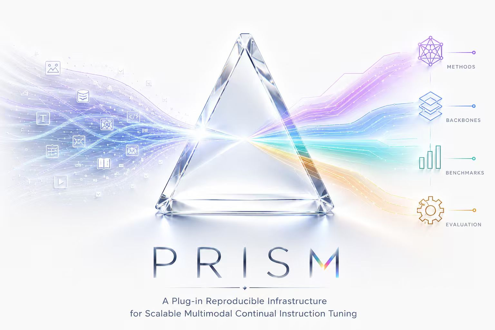

PRISM — A Plug-in Reproducible Infrastructure for Scalable Multimodal Continual Instruction Tuning
Documentation for researchers and contributors
Use the sidebar to browse topics. Click a section title to expand or collapse groups. Every link scrolls to an anchor in this page.
Introduction
Vision–language models are increasingly deployed in settings where new tasks, datasets, or instructions arrive over time. Retraining the full model for each arrival is costly and risks catastrophic forgetting of earlier capabilities.
PRISM targets continual instruction tuning on LLaVA-style architectures: you keep a frozen (or lightly tuned) multimodal backbone, add parameter-efficient adapters, and plug in continual-learning logic through a stable integration API.
Design goals
- Plug-in methods — Register a new CL algorithm without forking the trainer.
- Reproducibility — Pinned dependencies, centralized configs, logged DeepSpeed commands.
- Scalability — Multi-GPU training via DeepSpeed; per-rank model placement during load.
- Multimodal benchmarks — UCIT, CoIN, TriGap task schedules and eval hooks.
Relation to Hugging Face PEFT
The mental model matches the
PEFT quick tour:
configure adapters → wrap the base model → train a small footprint → save adapter_model.safetensors
→ load for inference. PRISM adds CLIntegration hooks (routing, replay, regularization, extra state)
and LLaVA-specific data/eval paths. The in-repo PEFT/ package is vendored with custom tuners;
do not replace it with upstream PyPI peft alone.
Architecture
The banner diagram refracts heterogeneous multimodal inputs into four pillars. Each pillar maps to directories you will touch when running or extending PRISM.
Four pillars
Methods
method/custom/<name>/integration.py implements CLIntegration. Custom tuners live in PEFT/tuners/custom/.
Backbones
backbone/llava/ + backbone/shared/train/ (LLaVATrainer, DeepSpeed) + multimodal processors.
Benchmarks
config/benchmarks/ defines task order, JSON paths, and BENCHMARK_TASK_NUM.
Evaluation
backbone/shared/eval/ for inference; utils/eval_merge_jsonl.py for metric aggregation.
Training pipeline
config/paths/llava_paths.py and benchmark paths2.
python run.py train <task_ids> --benchmark … --method …3.
core.load_model_for_train → LLaVA + PEFT + CLModel4.
LLaVATrainer + CLTrainerCallback → checkpoints/5.
python run.py infer … → results/ → eval merge script
Repository map
| Path | Role |
|---|---|
run.py | Single CLI for train / infer orchestration. |
core/ | Load/save models, merge configs, device placement. |
method/factory.py | Registers and instantiates integrations. |
config/methods/ | Per-method hyperparameters and batch sizes. |
config/run_config.py | Default CLI flags for train and infer. |
Methods catalog
Select a method with --method <id>. The id must match a folder under
method/custom/ with a registered integration class.
| Method | Description | Typical use |
|---|---|---|
hide_llava | HiDe-style routing + PEFT on LLaVA. | Strong CL baseline with task routing. |
replay_lora | Replay buffer + LoRA. | When stored past data is available. |
ft_lora | FT-style training with LoRA hooks. | Simple LoRA continual fine-tuning. |
olora | Orthogonal LoRA (O-LoRA–style). | Reduce interference between tasks. |
smolora | SMoLoRA mixture routing. | Instruction-conditioned expert selection. |
moelora | MoE-style LoRA experts. | Capacity across tasks. |
clmoe | CL-MoE wiring. | MoE continual learning experiments. |
modal_prompt | Modal / prompt tuning. | Prompt-based adaptation. |
ewc | Elastic Weight Consolidation. | Regularization without replay. |
disco | DISCO custom tuner. | Method-specific PEFT extension. |
same | SAME spectral + CLIP router experts. | Anchor-based expert mixture. |
zeroshot | No CL checkpoint. | Base LLaVA inference only. |
Hyperparameters (LoRA rank, batch size per task, PEFT target modules) are in
config/methods/<method>.py as METHOD_CONFIG and TRAIN_BATCH_SIZES.
Quick tour
End-to-end workflow in five steps:
- Clone repo and install dependencies (PyTorch first, then
requirements.txt). - Point
config/paths/llava_paths.pyat LLaVA, CLIP, and dataset roots. - Train sequential tasks:
python run.py train 0 1 2 … - Run inference on a task checkpoint:
python run.py infer … - Merge JSONL and compute metrics:
python utils/eval_merge_jsonl.py …
Installation
git clone <YOUR_REPO_URL> PRISM
cd PRISM
pip install -r requirements/torch.txt # match your CUDA version
pip install -r requirements.txtConda alternative:
conda env create -f environment.yml
conda activate prismrequirements/README.md for version pins (torch 2.0.1, transformers 4.31.0, deepspeed 0.10.3).
Verify install
python -c "import torch, transformers, deepspeed; print(torch.__version__)"
python -c "from core.load_model import _resolve_train_cuda_device; print('PRISM core OK')"Paths & data
Edit config/paths/llava_paths.py before any run:
| Variable | Description |
|---|---|
BASE_MODEL_PATH | LLaVA-1.5 (or compatible) weight directory. |
CLIP_PATH | CLIP checkpoint for vision/text towers. |
PRISM_ROOT | Root containing instructions/ and datasets/. |
CHECKPOINT_DIR | Output for Task{N}_llava folders. |
RESULT_DIR | Inference JSONL tree. |
LOG_DIR | Text logs from run.py. |
DEEPSPEED_CONFIG | Usually config/deepspeed/zero2.json. |
Benchmarks layout
Each benchmark under config/benchmarks/ lists tasks with JSON annotation paths and image folders.
run.py passes --benchmark ucit|coin|trigap to set task_num and data paths.
For UCIT, --use-sub-dataset appends _sub to JSON filenames (see utils/sub_dataset.py).
# config/paths/llava_paths.py (minimal example)
from pathlib import Path
PROJECT_ROOT = str(Path(__file__).parent.parent.parent.absolute())
BASE_MODEL_PATH = "/data/models/llava-v1.5-7b"
CLIP_PATH = "/data/models/clip-vit-large-patch14-336"
PRISM_ROOT = "/data/prism_assets" # instructions/ + datasets/
CHECKPOINT_DIR = f"{PROJECT_ROOT}/checkpoints"
RESULT_DIR = f"{PROJECT_ROOT}/results"
LOG_DIR = f"{PROJECT_ROOT}/logs"
DEEPSPEED_CONFIG = f"{PROJECT_ROOT}/config/deepspeed/zero2.json"Training
Training is launched by run.py, which calls DeepSpeed on
backbone/shared/train/train_mem.py (FlashAttention path) or train.py.
CLI reference
python run.py train <task_id> [more_ids ...] \
--benchmark ucit \
--method ewc \
--gpus 0,1,2,3 \
[--port 29602] \
[--debug] \
[--use-sub-dataset | --no-use-sub-dataset]Defaults come from config/run_config.py (TRAIN_DEFAULTS, TRAIN_EXTRA_ARGS).
What happens internally
load_config()merges CLI,config/methods/<method>.py, and benchmark task counts.load_model_for_trainbuilds LLaVA, wraps withCLModel+ integration, loads previous task weights if configured.LLaVATrainerruns the Hugging Face training loop with DeepSpeed; callbacks invokeCLIntegrationhooks.save_modelwrites PEFT adapters and callssave_extra_statewhen implemented.
cuda:{local_rank} before DeepSpeed init to avoid all ranks stacking on GPU 0 during load.
Checkpoints
Typical layout: checkpoints/<benchmark>/<method>/Task<k>_llava/ containing
adapter_config.json, adapter_model.safetensors, and optional method state
(e.g. same_state.bin, grac_state.bin).
Inference
python run.py infer <task_id> \
--benchmark ucit \
--method ewc \
--checkpoint-task 5 \
--checkpoint-suffix _llava \
--stage last \
--gpus 0,1 \
--temperature 0
Inference spawns backbone/shared/eval/model_unified.py with method-specific loading via
core.load_model_for_inference. For zeroshot, use --model-base only (no CL adapter).
Evaluation
After JSONL files are written under results/:
# Auto-find merge.jsonl under a result directory
python utils/eval_merge_jsonl.py /path/to/results/llava/ucit/ewc/Task5/last
# Explicit file + benchmark hint
python utils/eval_merge_jsonl.py merge.jsonl --benchmark ucit --task-id 5The script picks evaluators (VQA accuracy, caption metrics, etc.) from the benchmark and dataset name.
Reproduce experiments
- Lock environment — Use pinned
requirements/; record CUDA driver version. - Match assets — Same LLaVA base, CLIP, and benchmark file layout as the reference run.
- Align configs — Copy or diff
config/run_config.pyandconfig/methods/<method>.py. - Train in order — Incremental methods require prior
Task{k}_llavacheckpoints or explicitprevious_task_model_path. - Match infer flags —
--conv-mode,--temperature,--stage, chunk settings. - Compare logs — Under
output/; training logs echo the full DeepSpeed command.
python run.py train … --debug sets PYPRISM_LOG_LEVEL=DEBUG in the training subprocess.
Add a new method
Adding a method is similar to registering a new PEFT tuner plus trainer callbacks: implement hooks,
register the name, add config, then run run.py.
1. Integration class
Create method/custom/my_method/integration.py:
from method.base.integration import CLIntegration
from method.base.context import CLContext
from method.factory import CLMethodFactory
@CLMethodFactory.register("my_method")
class MyMethodIntegration(CLIntegration):
def initialize_model(self, model):
...
def on_input_prep(self, model, args, kwargs, context: CLContext):
...
def on_forward_start(self, model, context: CLContext):
...
def on_forward_end(self, model, outputs, context: CLContext):
return outputs
def on_task_end(self, model, context: CLContext, task_id: int):
...
def get_inference_config(self):
return {}Key optional overrides: save_extra_state, load_extra_state, prepare_training_data, compute_total_loss.
2. Method config
Add config/methods/my_method.py with:
METHOD_CONFIG— LoRA ranks,peft_target_modules, method-specific flags.TRAIN_BATCH_SIZES— nested dict benchmark → task index → batch size.INFER_DEFAULTS— optional defaults forrun.py infer.
# config/methods/ewc.py (excerpt — copy pattern for my_method)
METHOD_CONFIG = {
"lora_dropout": 0.05,
"peft_target_modules": "attn_and_ffn",
"ewc_lambda": 5000,
"ewc_fisher_batches": 50,
}
TRAIN_BATCH_SIZES = {
"ucit": {0: 8, 1: 8, 2: 8, 3: 8, 4: 8, 5: 4},
"coin": {0: 12, 1: 12, 2: 12, 3: 12, 4: 12, 5: 12, 6: 12, 7: 12},
}
INFER_DEFAULTS = {"batch_size": 12}
TRAIN_FLAG_OVERRIDES = {
"--learning_rate": "2e-4",
"--num_train_epochs": "1",
}3. Custom PEFT tuner (optional)
Add PEFT/tuners/custom/my_tuner.py, register in PEFT/mapping.py, and call
register_peft_extension from your integration (see method/custom/same/integration.py).
4. Run
python run.py train 0 --benchmark ucit --method my_method --gpus 0Vendored PEFT
PRISM includes a modified PEFT/ tree with custom tuners (same, hidellava,
smolora, disco, …). Training integrations call into this package for adapter injection
and checkpoint I/O.
peft without porting custom tuners will break training and checkpoint loading.
Configuration reference
PRISM separates global CLI defaults, per-method hyperparameters,
benchmark task tables, and filesystem paths. CLI flags always override
values in config/run_config.py; method files override training flags via TRAIN_FLAG_OVERRIDES.
| File | Contents |
|---|---|
config/run_config.py | TRAIN_DEFAULTS, INFER_DEFAULTS, extra CLI args. |
config/methods/*.py | Per-method training and inference overrides. |
config/benchmarks/*.py | Task definitions and eval dataset names. |
config/backbone/llava.py | DEFAULT_CONV_MODE, CLIP_FEATURE_DIM. |
config/deepspeed/*.json | ZeRO stage configuration. |
Global defaults — run_config.py
Edit once to change the default benchmark, method, or GPU list for every invocation:
# config/run_config.py
TRAIN_DEFAULTS = {
"benchmark": "ucit",
"method": "ewc",
"gpus": "0,1,2,3",
"port": 29602,
"debug": False,
"use_sub_dataset": False,
}
INFER_DEFAULTS = {
"benchmark": "ucit",
"method": "ewc",
"checkpoint_task": "5",
"checkpoint_suffix": "_llava",
"stage": "last",
"gpus": "0",
"temperature": "0",
}
# Appended to every train command (optional)
TRAIN_EXTRA_ARGS: list[str] = []Override on the command line without editing the file:
python run.py train 0 --benchmark coin --method same --gpus 0,1 --debugPer-method — config/methods/<method>.py
Each method module exports METHOD_CONFIG (PEFT + algorithm knobs),
TRAIN_BATCH_SIZES[benchmark][task_id], and optional TRAIN_FLAG_OVERRIDES
merged into the DeepSpeed launch string.
# config/methods/same.py (pattern)
METHOD_CONFIG = {
"lora_r": 64,
"lora_alpha": 16,
"peft_target_modules": "attn_and_ffn",
# method-specific keys consumed in integration.py
}
TRAIN_BATCH_SIZES = {
"ucit": {0: 4, 1: 4, 2: 4, 3: 4, 4: 4, 5: 2},
}Paths — config/paths/llava_paths.py
Point these at your local LLaVA weights, CLIP, and dataset roots before the first train run:
BASE_MODEL_PATH = "/path/to/llava-v1.5-7b"
CLIP_PATH = "/path/to/clip-vit-large-patch14-336"
PRISM_ROOT = "/path/to/prism_data" # contains instructions/ and datasets/
CHECKPOINT_DIR = f"{PROJECT_ROOT}/checkpoints"
RESULT_DIR = f"{PROJECT_ROOT}/results"
MCIT_ROOT is kept as a legacy alias for older checkpoints and docs that still reference the previous project name.
Environment variables
| Variable | Purpose |
|---|---|
PYPRISM_LOG_LEVEL | Logging level for training subprocess (DEBUG, INFO, …). Legacy: PYMCIT_LOG_LEVEL. |
PRISM_SAME_* | Optional overrides for SAME router / expert behavior (see method/custom/same/). Legacy: MCITBOX_SAME_*. |
CUDA_VISIBLE_DEVICES | Set by run.py from --gpus before spawning workers. |
export PYPRISM_LOG_LEVEL=DEBUG
python run.py train 0 --benchmark ucit --method ewc --gpus 0Authors
Troubleshooting
Out-of-memory during multi-GPU load
Ensure each rank loads onto its local device. PRISM resolves cuda:{local_rank} in
core/load_model.py before DeepSpeed initialization. If you still OOM, reduce
TRAIN_BATCH_SIZES for the task or use ZeRO-3 in config/deepspeed/.
Checkpoint not found at inference
# Expected layout
checkpoints/ucit/ewc/Task2_llava/adapter_model.safetensors
python run.py infer 2 --benchmark ucit --method ewc \
--checkpoint-task 2 --checkpoint-suffix _llava --stage lastCustom PEFT tuner not registered
Call register_peft_extension from your integration’s initialize_model
and verify the tuner name appears in PEFT/mapping.py.
Reproduce metrics mismatch
Match --conv-mode, --temperature, --stage (e.g. last vs best),
and the same --use-sub-dataset flag used during training.